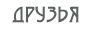

Лампочка
Не всё ли равно, про кого говорить? Заслуживает того каждый из живших на земле. И.Бунин «Сны Чанга». Em A7 Dmaj Gmaj C#m7-5 F#7+5 1-e--0-----0----(5)-----x-------x--------x------ 2-B--0-----2-----7------3-------5--------3------ 3-G--0-----0-----6------4-------4--------3------ 4-D--2-----2-----7------4-------5--------2------ 5-A--2-----0-----5------x-------4--------x------ 6-E--0----(0)---(5)-----3-------x--------2------ Bm Em/D# Em/D Em/C# F#7 D#dim G 1-e---2---0------0-----0-----2---(5)-----3------ 2-B---3---0------0-----0-----2----7------0------ 3-G---4---0------0-----0-----3----5------0------ 4-D---4---1------0-----2-----2----7------0------ 5-A---2--(2)----(2)----4-----4----6------2------ 6-E--(2)--X------X-----X-----2----x------3------ Em A7 Dmaj Gmaj C#m7-5 F#7+5 Bm C#m7-5 Dmaj D#dim Em A7 Dmaj Gmaj C#m7-5 F#7+5 Bm C#m7-5 Представь себе: он лампочка в уборной — Em Em/D C#m7-5 F#7+5 Общественной, не знавшей белизны. Em Em/D# Em/D Em/C# Лишь мухи бьются тупо и упорно Em Em/D C#m7-5 F#7+5 В стекло его загаженной спины. Em Em/D# Em/D Em/C# Над ним — неровным небом потолок. Em Em/D C#m7-5 F#7+5 Под ним — исподов сокровенный выгул. Em Em/D C#m7-5 И беспокойный провод, как вьюнок, G F#7 Ведёт к рубильнику с дилеммой ВКЛ и ВЫКЛ. Мир перевёрнут, переломан цоколь, И прошлое — невнятный полумрак, И нету силы думать о высоком, Но не светить ему нельзя никак. Внутри него — каких-то сотня ватт, За ним — сопротивленье ом так в двести. Но ведь никто, заметь, не виноват В так странно высвеченных времени и месте. Em A7 И где бы дух твой безмятежный не носило, Dmaj Gmaj И кем бы ни был ты на том и этом свете, C#m7-5 F#7+5 Сейчас ты — лампочка, что светит в четверть силы Dm C#m7-5 Dmaj D#dim В забытом Богом привокзальном туалете. Она была улыбкой на обложке Красивого рекламного журнала. Её всегда встречали по одёжке, А большего она и не желала. Но был лишен красивости финал, И закатилось яркое светило — Её до дыр засмотренный журнал Осел в кабинке привокзального сортира. Теперь гляди, как нестерпимо туго Случайность натянула тетиву, Когда они увидели друг друга — Без всяких предисловий, наяву. И искры пронеслись по проводам, Детектор зафиксировал ошибку. А он подумал: «Что же я отдам, Чтоб осветить её погасшую улыбку?» И кем бы ни были мы в настоящей жизни, И что бы в будущей себе ни заказали, Но в этот миг мы перестанем быть чужими На переполненном разлуками вокзале. А ты? Ты коротаешь ночь в вагоне, Поёшь во сне неписаные песни, И что тебе до двух чужих агоний, Замешанных в рифмованные смеси? Но гулкий взрыв уснувших оглушил — Горит сарай на станции промозглой. И, видишь, там две слипшихся души Сигнальным пламенем летят к далёким звёздам... Какие б токи сквозь тебя ни проходили, И по каким бы ты ни мыкался дорогам, Будь ты хоть оттиском, хоть лампочкой в сортире, — Ты не забыт ни электричеством, ни Богом.«Зимовье Зверей»
| Merlin_the_Warlock@yahoo.com |